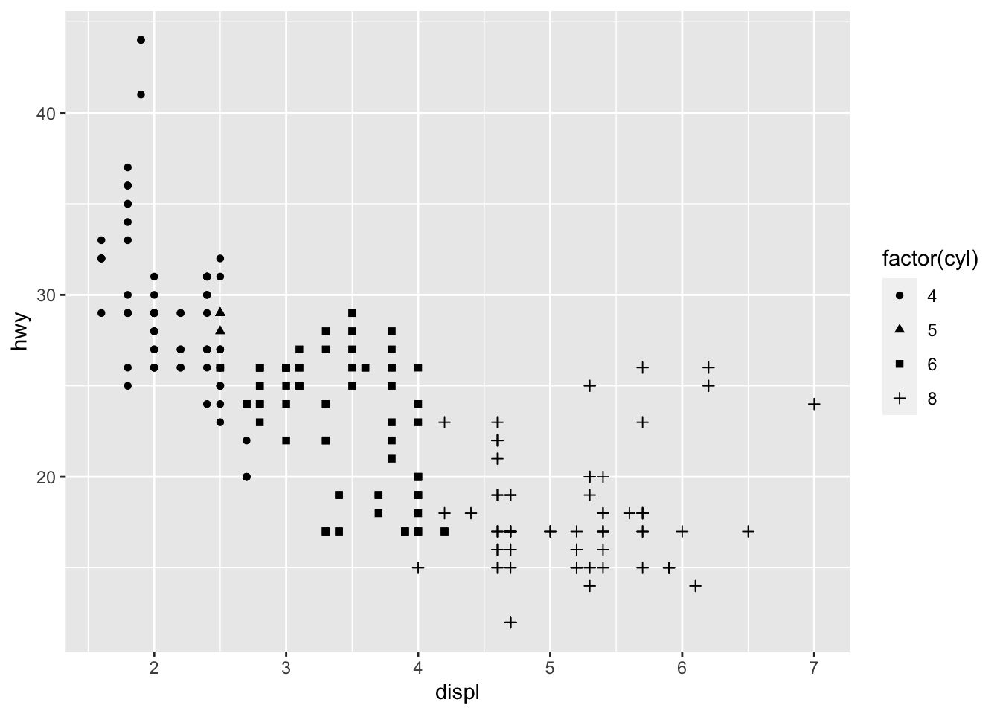
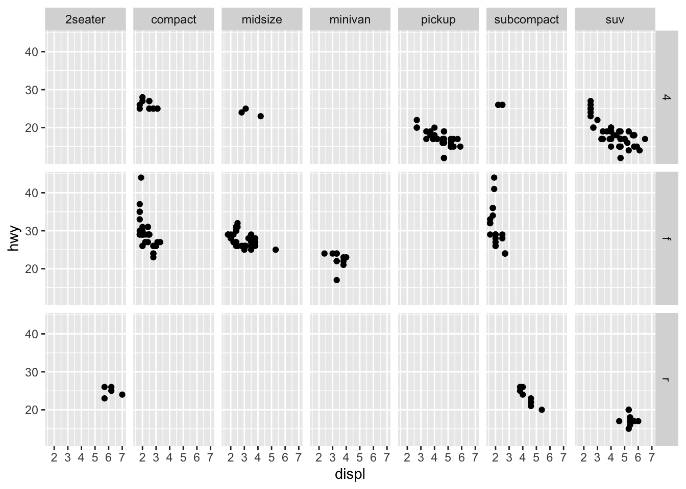
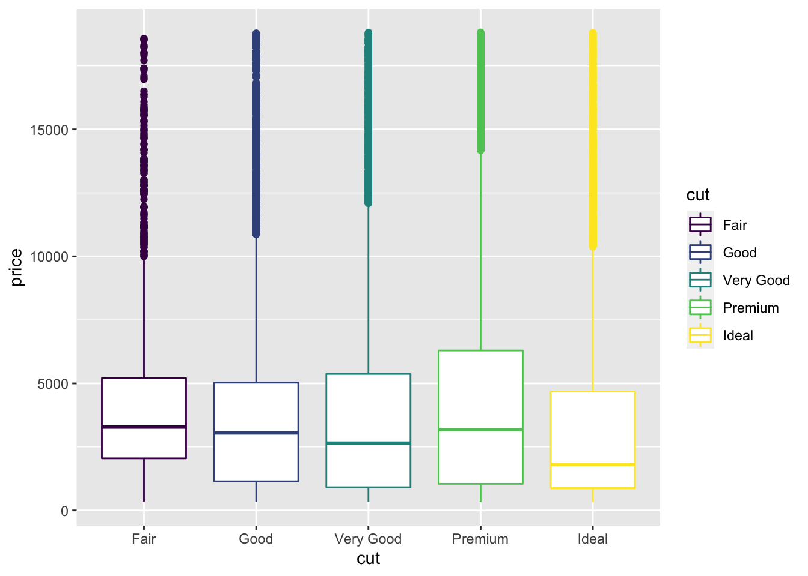
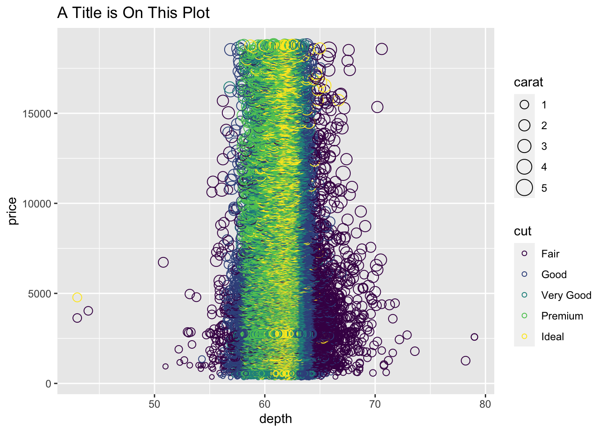
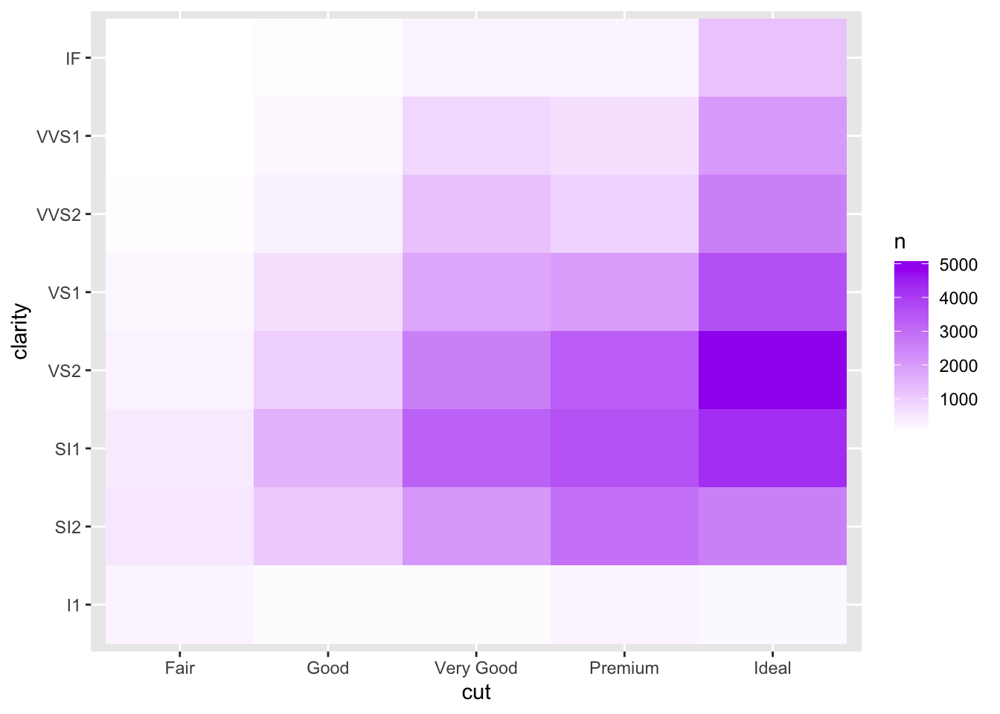
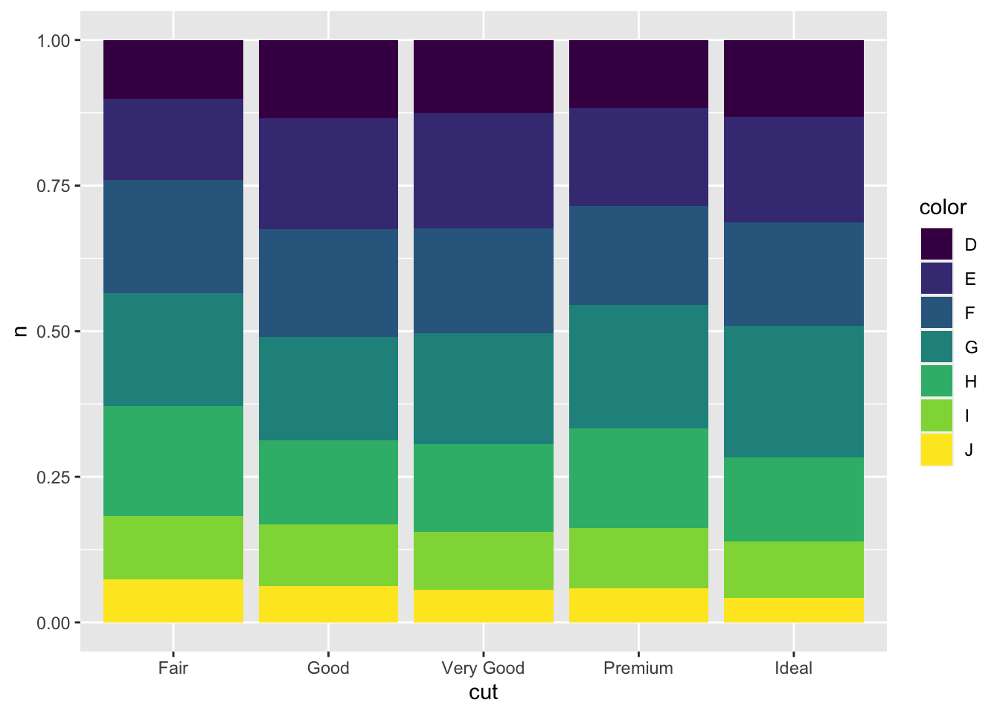
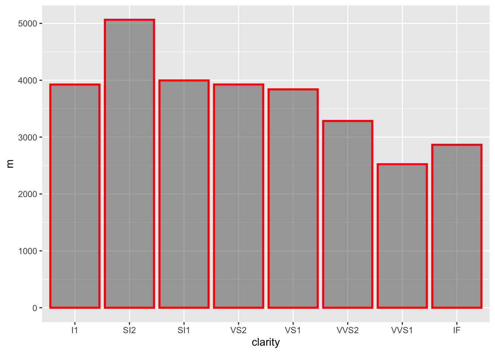
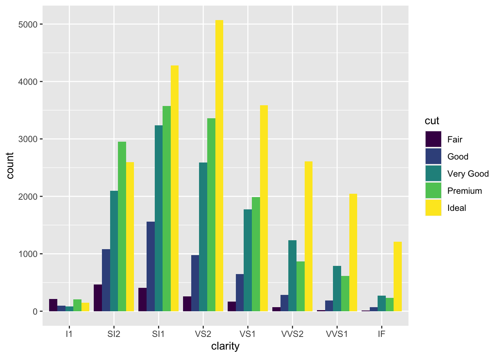
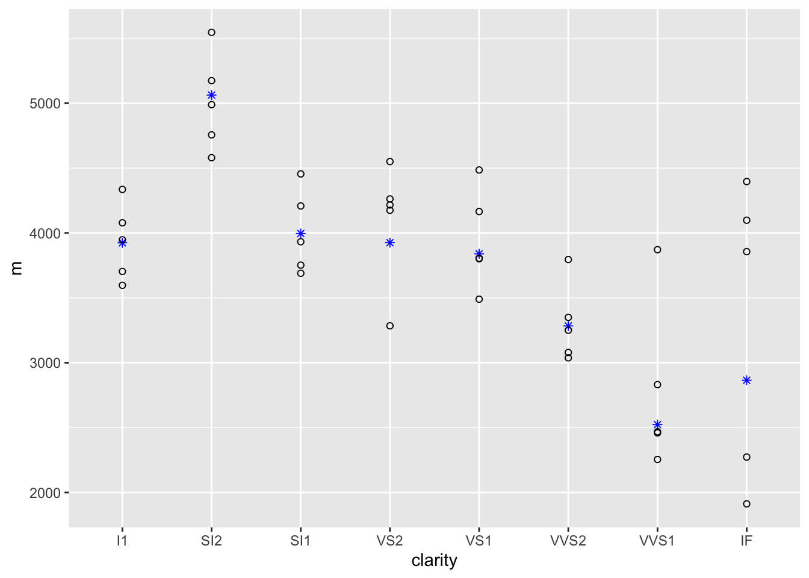

Chapter 16 ggplot2
16.1 Tidyverse and ggplot2
For this document you will need to install and load the package ggplot2 functions. To install the package refer to Section 8.
The tidyverse is a collection of packages that share a unique underlying philosophy, frame work, and syntax. There are approximately 20 tidyverse packages, but the core ones are ggplot2, dplyr, tidyr, readr, purr, tibble, stringr, and forcats. You can install these packages individually or all at once using by simply using the command install.packages("tidyverse").
We will be focusing on the ggplot2 package for now. The functions and topics that we that we will be covering can be found in Wickham and others (2009).
16.2 Intro to ggplot2
The package ggplot2 is used to produce graphics using a different system then traditional “Base R”. It has an underlying grammar or style that is different that is based on the “grammar of graphics”.
What is the grammar of graphics?
The structure of the “grammar of graphics” aims to create graphics using different layers. The grammar tells us how to map aesthetic attributes (color, shape, size) of a geometric object (points, lines, bars). We might also have a statistical transformation of the data and information about the coordinate system. Faceting is also considered. The combination of these elements make up a “graphic”.
All plots are composed of data and a mapping.
data: information you want to visualize
mapping: description of how the variables are mapped to aesthetic attributes.
There are five mapping components:
Layer: a collect of geometric elements and statistical transformations.
Geometric elements are called geoms, they are what you see (points, lines, etc.)
Statistical transformations are called stats, they summarize the data (counting observations, makeing models)
Scales: a map of the values in the data space to the aesthetic space.
Modifications of the color, shape, size
How to draw legends and axes
Coordinate System: called coord, describe how data coordinates are mapped to the plane of the graphic.
- Usually use Cartesian coordinate system.
Facet: How to break up and display subsets of data as small multiples.
Theme: control other points of display, like font size, and background color.
ggplot2 versus other R Graphics
Base R: graphics work like a “pen on paper”
Grid: started in 2000, provided a richer system of graphics tools that are more complex.
Lattice: a new system proposed (2008ish). Uses grid graphics to implement a trellis system that populates more plotting details automatically
ggplot2: started 2005, an attempt to combine the good things about lattice and base R together using the “grammar of graphics”
16.3 Getting started: Kep Components
Every ggplot2 plot has 3 key components:
Data
A set of aesthetic mappings between variables in the data and visual properties
At least one layer which described how to render each observation. Layers are usually created with a geom function.
A Basic Example:

16.4 Adjust aesthetic attributes by variable
We can adjust aesthetic attributes by variable using the aes() function and the mapping argument.
# Adjust the color for each point by class
aes(x = displ, y = hwy, color = class)
# Adjust the shape for each point by drv
aes(x = displ, y = hwy, shape = drv)
# Adjust the size of each point by cyl
aes(x = displ, y = hwy, shape = cyl)


16.5 Adjust aesthetic attributes for the entire plot
Notice that the plot changes based on if the color is assigned outside or inside of the aes() function. This is because the aes() function is used to map the data to an aesthetic property of the map. Inside of aes() we let the aesthetic argument (color, shape, etc) equal a variable in the data set. The different values for that variable control what happens to that aesthetic. If we assign aesthetic value outside of the aes() function then we are just assigning a value for the entire data set and do not use column names of the data.
# Change aesthetic attributes according to some variable
ggplot(mpg, aes(displ, hwy)) +
geom_point(aes(color = class))
# Attempt to change all points to blue
# Will not run correctly because colour = "blue" is inside aes()
ggplot(mpg, aes(displ, hwy)) +
geom_point(aes(color = "blue"))
# Change all points to blue, works correctly
ggplot(mpg, aes(displ, hwy)) +
geom_point(color = "blue")
16.6 Faceting
Faceting creates tables of graphics by splitting the data into subsets and displaying the same graph for each subset. You can faceting using facet_wrap() which is more flexible and automatically determines how to organize the data. Or, you can manually determine the facet structure using facet_grid().
# Facet Wrap: Let ggplot decide how many rows and columns to make
# Only give one variable to break data up by ~ Variable
ggplot(mpg, aes(displ, hwy)) +
geom_point() +
facet_wrap(~class)
# Facet Grid: Number of rows and columns by number of unique values
# for variable 1 and variable 2
# Row variable ~ Column variable.
ggplot(mpg, aes(displ, hwy)) +
geom_point() +
facet_grid(drv~class)
16.7 Some example plots

# Example 2
ggplot(diamonds)+
geom_point(mapping=aes(y = price, x = depth, size = carat,
color = cut), pch = 1)+
labs(title = "A Title is On This Plot")
# Example 3
subgroups_diamonds = ddply(diamonds, c("cut", "clarity"),
summarize, n = length(cut))
ggplot(data = subgroups_diamonds) +
geom_tile(mapping = aes(x = cut, y = clarity, fill = n))+
scale_fill_gradient(low="white", high="purple")
# Example 4: Method 1
subgroups_diamonds2 = ddply(diamonds, c("cut", "color"),
summarize, n = length(cut))
ggplot(data = subgroups_diamonds2)+
geom_bar(mapping = aes(x = cut, y = n, fill = color),
position="fill", stat = "identity")
# Example 4: Method 2
ggplot(data = diamonds)+
geom_bar(mapping = aes(x = cut, fill=color),
position = "fill")# Example 5
plot_data = ddply(diamonds, "clarity", summarize, m = mean(price))
ggplot(plot_data, aes(x = clarity, y = m)) +
geom_bar(stat = "identity",
show.legend = FALSE,
color = "red",
size = 1,
alpha = .5)
# Example 6
ggplot(diamonds, aes(x = clarity, group = cut, fill = cut)) +
geom_bar(position = "dodge")
# Example 7
## creating dataset #1
data1 = ddply(diamonds, "clarity", summarize, m = mean(price))
## creating dataset #2
data2 = ddply(diamonds, c("clarity", "cut"), summarize, m = mean(price))
## graphing data points from 2 different datasets on one graph
ggplot() +
geom_point(data = data1, aes(x = clarity, y = m), color = "blue", pch = 8) +
geom_point(data = data2, aes(x = clarity, y = m), pch = 1)
References
Wickham, Hadley, and others. 2009. “Elegant Graphics for Data Analysis.” Media 35 (211): 10–1007.